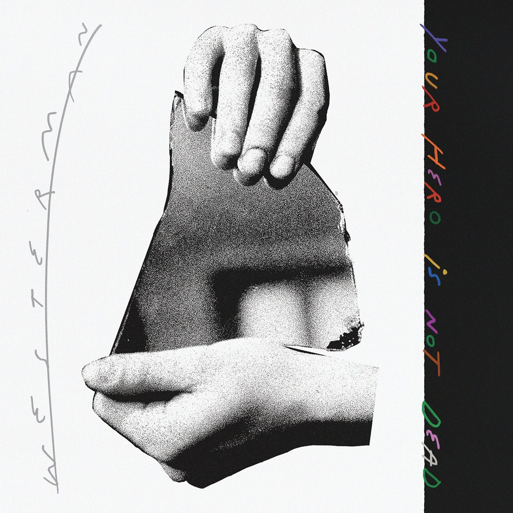
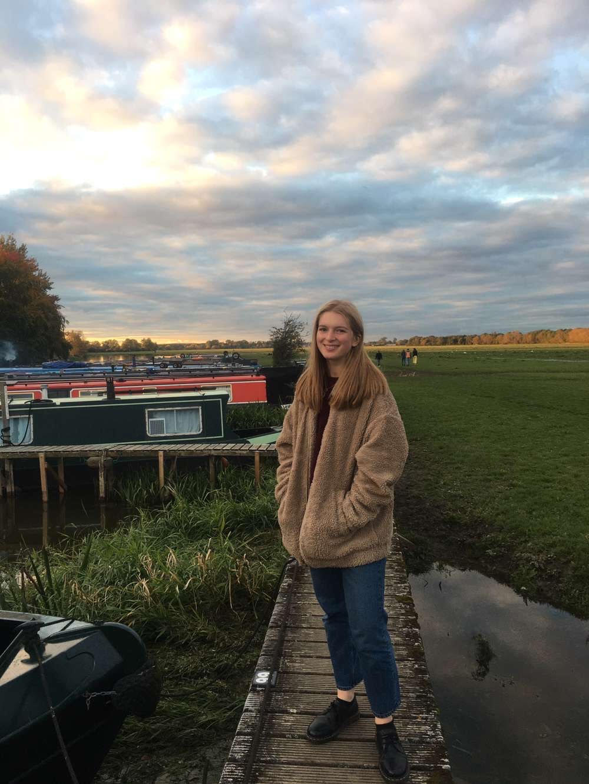
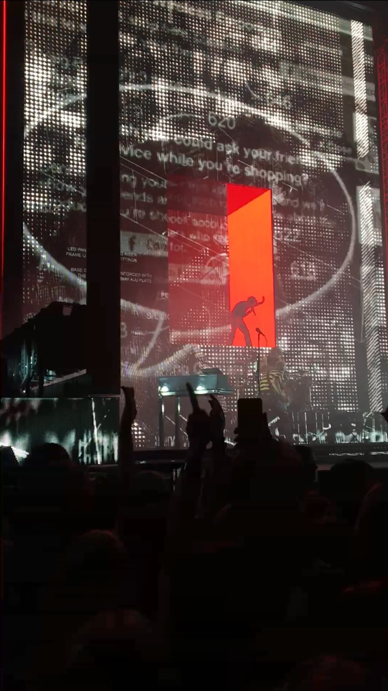

Who am I?
I'm Laura Cutting, the founder of 'Typetune'. I'm currently living and studying in Oxford however I was raised in London, a city renowned for it's music scene.
Growing up, rather than partaking in sports like many of my friends I was usually found tucked into a quiet corner reading or listening to music, the impacts of both of these passions are ever present in my life today ...
I'm currently reading The Girl with the Dragon Tattoo
I'm currently listening to Float Over by Westerman
At the Weekend I Enjoy ...
- - Expanding on my house plant collection
- - Going for walks around Oxford - exploring the city
- - Listening to music and attending concerts (when we're not living through a pandemic of course!)
Here I am walking through Port Meadow, Oxford:
Why do I love music so much?
I've been surrounded by music my whole life. From a young age I was presented with a myriad of styles and sounds from the psychedelic twangs of the Beatles' 'Revolver' album to Elton John's uptempo 'Crocodile Rock'.
As soon as I was old enough to attend gigs with my friends I would scrape together enough money for a ticket and queue outside, often battling through icy autumn rain, brimming with excitement and anticipation.
Here's a picture I took at a 'The 1975' gig last year: 
I now look forward to live music returning in the (hopefully) not too distant future.
You've learned a little about me ...